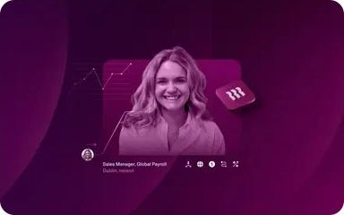
One plum hue on every image. One soft-3D object, centred. Real employee photos only on people stories (from your screenshots).
You like your current look; the problem is that 1,900+ articles share one composition. I studied the cover images of 20 blogs (design leaders plus the healthcare and practice-software brands your readers know) to see how they keep a big archive varied without losing the brand. Then I turned what works into six layouts for your blog.
The latest covers on honesttaskers.com/articles. Each is well made on its own; side by side they read as one image repeated: a smiling person in a headset, floating UI cards, a blue glow and a corner checkmark.
Captured on 6 October 2026 with a headless browser (Rippling from your screenshots, since it rate-limited the crawler). Four covers per site; the tags name the technique each one uses to keep its archive varied.

One plum hue on every image. One soft-3D object, centred. Real employee photos only on people stories (from your screenshots).
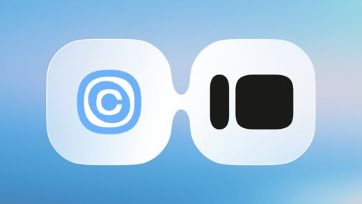
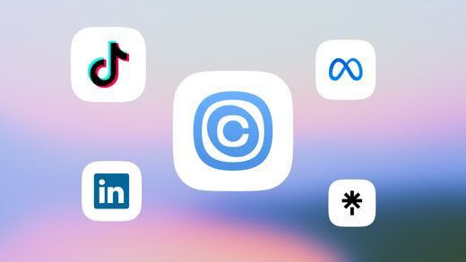
Soft gradient or pastel-pill backdrop every time. Real product UI cards with real content, often next to one candid photo. Partner logos bridged for integrations.
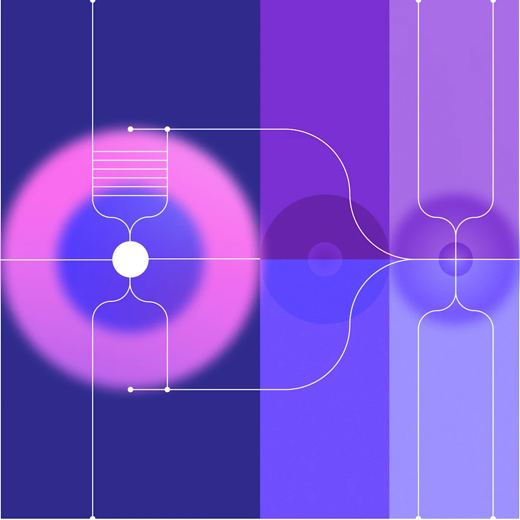
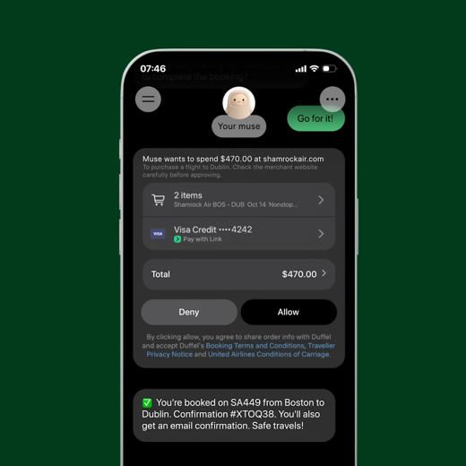
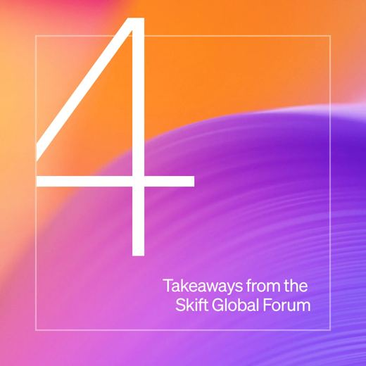
Mode by category: product posts get line art or the app; industry posts get one big statistic (160%, 4.3x) on a purple field.
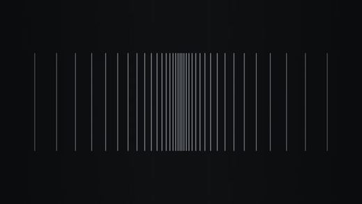
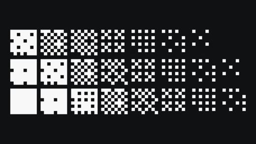
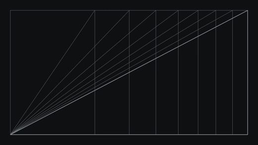
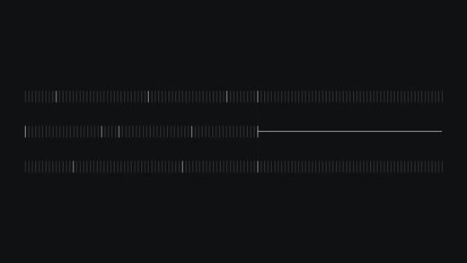
Near-black field with thin white line drawings. Restraint is the identity. Event posts switch to real photos.
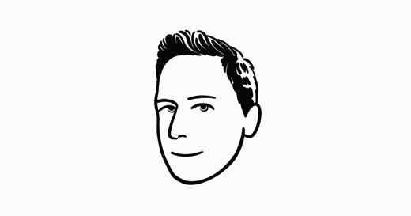
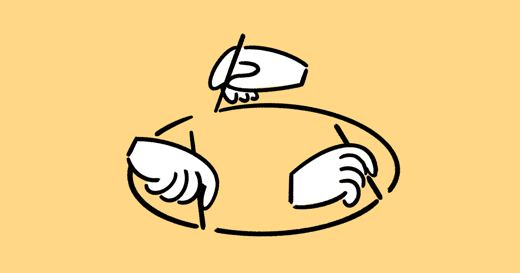
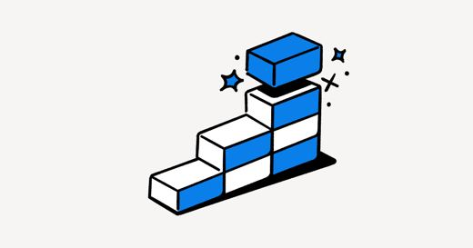
One illustrator, black ink plus one blue. Same 1200×630 size as yours.
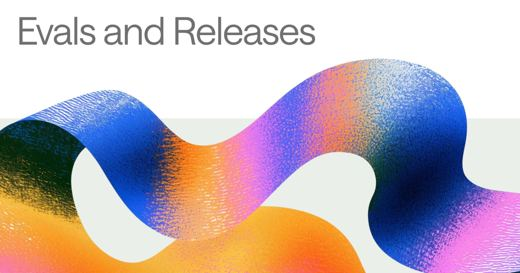
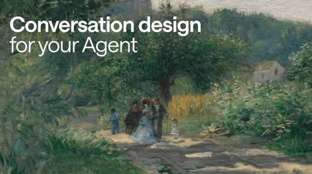
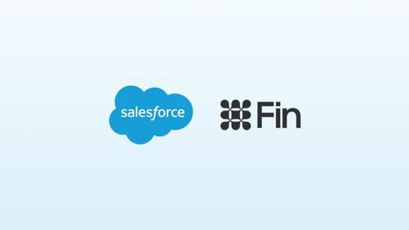
Headlines on images, painterly art, logo lockups. The least consistent of the design brands.
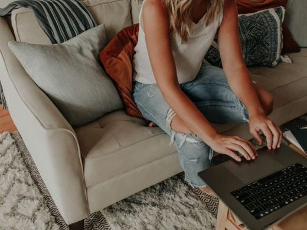
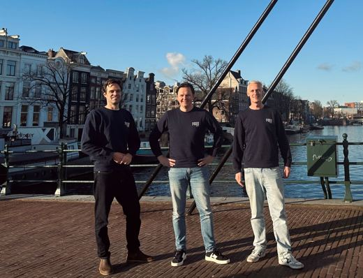
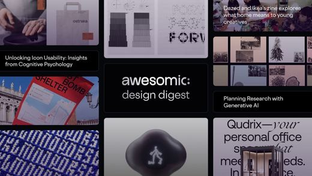
Customer stories use real candid photography: hands, teams on location, city views. No overlays.
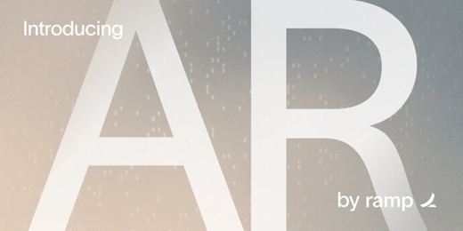
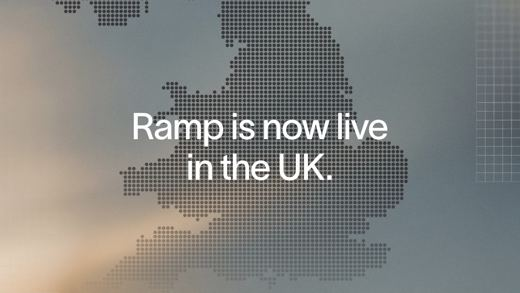
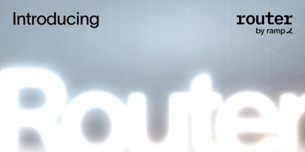
Launches get giant type and the chartreuse accent; partnerships get logo lockups.
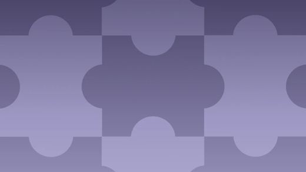
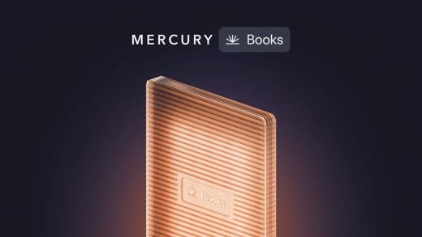
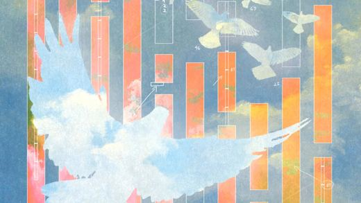
Each category has its own muted duotone palette with one sculpted object. Variety comes from category colour.
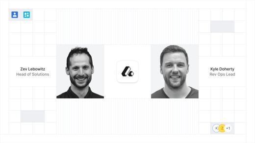
Only the featured post gets a cover. The rest of the list is text.
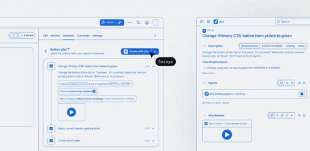
Black-and-white cut-out people on bold brand shapes, plus one UI snippet. Pattern tiles as a fallback.
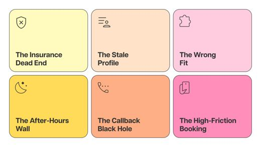
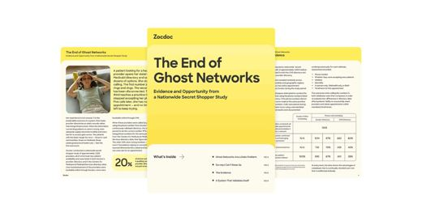
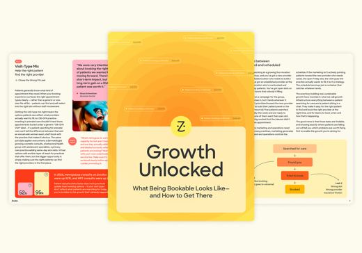
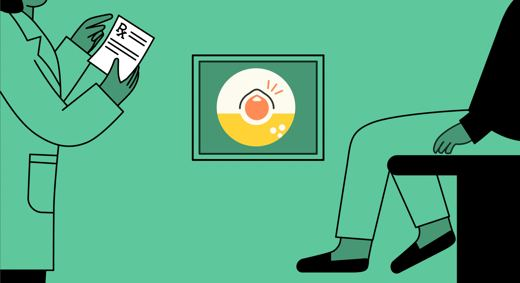
Yellow and peach brand fields, line illustrations of clinicians, report covers, event cards with speaker headshots.
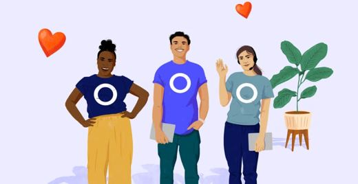
Warm painted illustrations of people on pastel fields, plus phone UI.
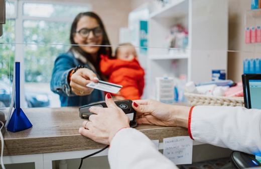
Real photos of front desks, clinicians and patients. Webinar cards with headshots.
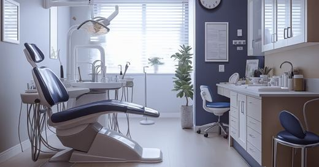
Dental office photos, real clinician portraits, podcast cards with B&W portraits on black. Titles often on the image.
Documentary photos: clinicians with tablets, patients, natural light, every scene different. Its one AI "hologram" image is the weakest card on the page.
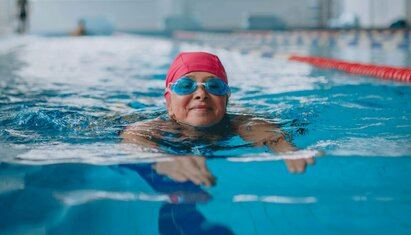
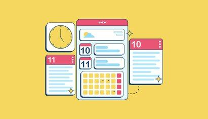
Warm editorial photos (hands, clients, outdoors) mixed with flat icons on yellow and mint.
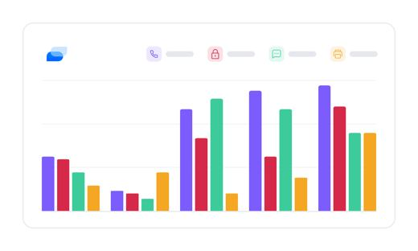
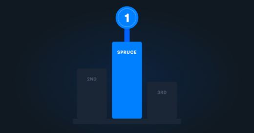
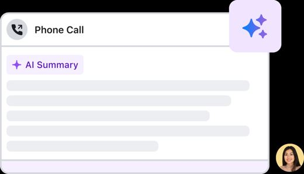
Charts, webinar cards, circle headshots on flat colour fields. Inconsistent.
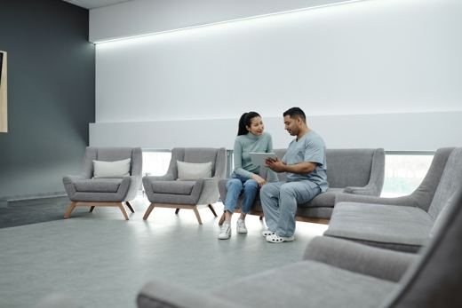
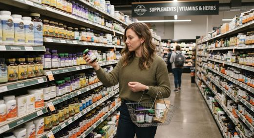
Real clinician and patient photos and product screenshots. One "icons floating over a keyboard" image, the same genre as yours, looks cheapest.
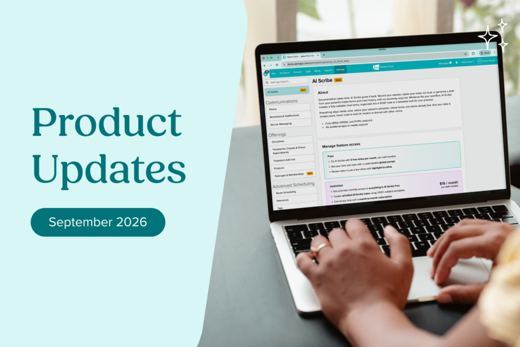
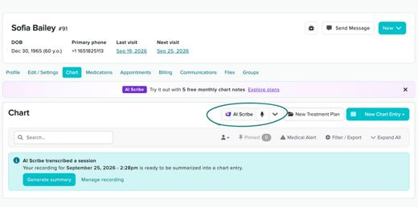
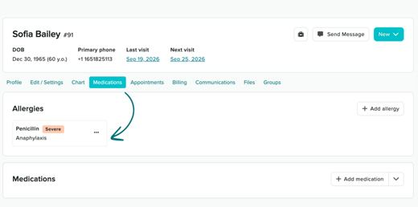
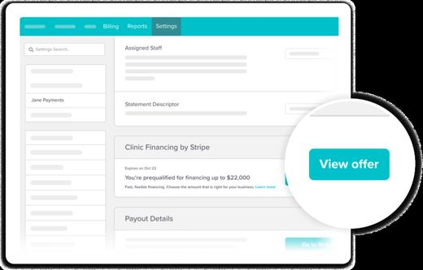
Product UI screenshots, and a laptop photo beside a label panel.
Different kinds of posts get different kinds of covers: a statistic for data posts, a product shot for launches, a person for stories.
Each category owns a colour from the same family, so the grid alternates without breaking the brand.
Documentary-style photos where the scene changes every time: front desk, patient visit, hands on a keyboard, a pet on an exam table.
A fixed graphic treatment (duotone, black and white, a brand shape) makes very different photos read as one series.
A single, legible interface card with specific content, never a cluster of placeholder bars.
Data and list posts lead with the figure itself, set large.
Icons floating over a desk scene (the one cheap-looking card on Hint's and athenahealth's pages, and the genre of your current covers), and article titles baked into the image.
Each layout borrows a principle, not artwork, and is assigned by article category, so the type of post decides the cover. Post counts come from the 1,903 titles in your image manifests.
| Layout | What it is | Borrowed principle | Your categories | Posts |
|---|---|---|---|---|
| Frame | Photo on the left, one legible UI card on a brand panel | Calendly, Loom, Jane: one real UI card | Role explainers, how-to, software & EHR, hiring | ~840 |
| Numeral | Large count and a short label beside a photo | Stripe statistics, Rippling "27" | "N Best … Companies", interview questions | ~450 |
| Split | In-house photo (muted) next to virtual photo (full colour), teal seam | Calendly bridges, made photographic | "… vs. In-House Staff" | 251 |
| Stat | Photo and one verified figure ($4–8 per hour) | Stripe industry posts | Cost, pricing, pay | 211 |
| Duotone | Full-bleed photo in brand blues with one white badge | Rippling people posts, Mercury palettes, Loom | Compliance, tasks & benefits | ~170 |
| Scene | A practice detail with no VA in it (pet, treatment room, front desk) and one brand corner block | athenahealth, Weave, SimplePractice | Specialty posts (dental, vet, MedSpa…), mixed in to break up faces | any |
Rendered from one HTML template. The photos are crops of your existing images, used as stand-ins; the layouts, colours and cards are the new part.
Your card shows only the top 56% of each image (the title panel covers the rest), so every layout keeps faces, numbers and cards in that band. Same 12 articles, before and after, in a replica of the card.
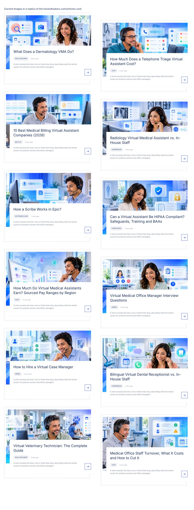
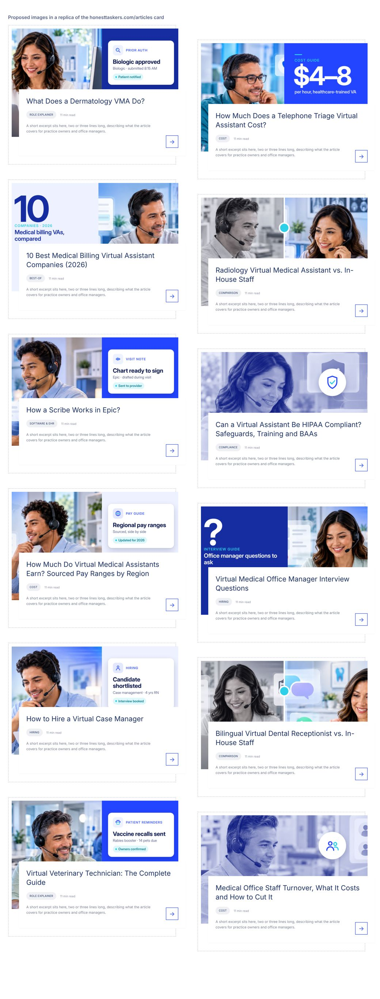
Keep the people and the healthcare setting you like; change what the photos show and how they are shot.